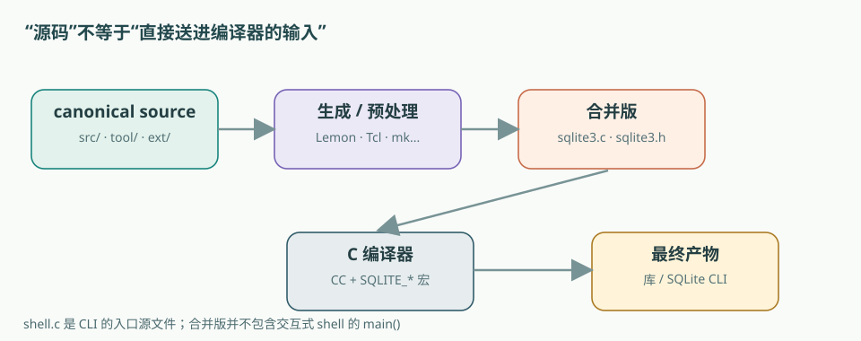
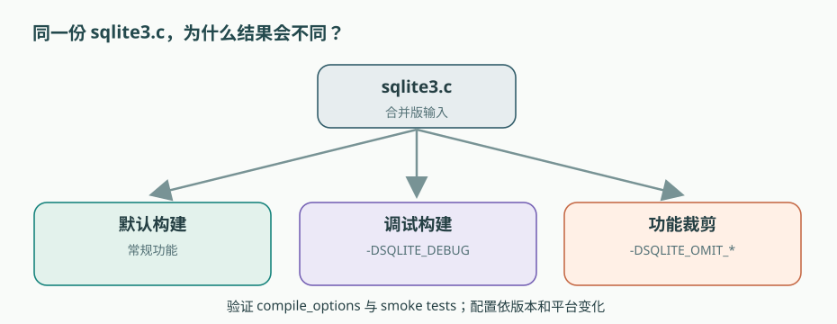

SQLite 是怎么编译出来的：从生成器到合并版
为什么官方既给出成百上千个源文件，又推荐用单个 sqlite3.c 编译？答案在生成步骤、构建边界与可验证的编译选项里。
1. “拿到 C 文件就能编译”为什么只对一部分分发包成立？
如果你下载的是 sqlite-amalgamation-*.zip，核心库的 sqlite3.c 和头文件通常已经准备好；如果克隆的是规范源码树，还会遇到词法、语法、头文件、操作码等生成步骤。两种路径最终可以得到同样的 SQLite 功能，但它们的构建输入不一样。

官方 编译指南建议应用程序优先使用合并版，理由包括减少依赖、方便内嵌以及为编译器提供更大范围的优化机会。源码研究则应保留规范源文件树方便逐文件追踪。
2. 三条构建路线如何选择
| 目标 | 输入 | 典型命令或入口 |
|---|---|---|
| 快速试用 SQLite CLI | 现成的合并版包 | 把 shell.c 与 sqlite3.c 一起编译 |
| 编辑 SQLite 内部实现 | canonical source | Unix/macOS: ./configure && make |
| Windows/MSVC 构建 | 官方源码分发 | nmake /f Makefile.msc |
用合并版做最小可复现编译
# 在已解压且包含 sqlite3.c、sqlite3.h、shell.c 的目录执行（Unix-like）
cc -O2 shell.c sqlite3.c -ldl -lpthread -lm -o sqlite3
./sqlite3 :memory: "SELECT sqlite_version();"
# 若平台缺少 -ldl 或链接方式不同，按平台调整要在自己程序里链接 SQLite 核心，通常只需 sqlite3.c 与 sqlite3.h；若要交互式命令行，再加 shell.c。把 shell.c.in 误当成可直接编译的 shell.c，或者把解析器输入文件 parse.y 当成 C 代码，都是入门时常见的路径混淆。
规范源码构建
git clone https://github.com/sqlite/sqlite.git
cd sqlite
./configure
make
# 进一步可按对应检出版本的 Makefile 生成 sqlite3.c；不同版本的产物位置可能不同实际构建选项、所需工具及产物目录取决于 SQLite 版本、平台与分发形式。请优先核对仓库附带的 README.md 和 doc/compile-for-unix.md，不要拿十年前的 Makefile 路径做绝对承诺。
3. SQLITE_* 宏到底改变了什么
SQLite 在 C 预处理阶段读取大量编译选项。选项可能影响线程互斥、诊断、扩展功能是否包含在库中，也可能改变代码生成时可见的分支。编译宏不是运行时可以随意切换的 PRAGMA。

| 常见编译选项 | 用于理解什么 | 核验建议 |
|---|---|---|
SQLITE_THREADSAFE | 互斥相关编译配置 | 同时理解编译模式与运行时配置 |
SQLITE_DEBUG | 启用额外断言和诊断代码 | 适合源码调试，不是通用性能配置 |
SQLITE_OMIT_* | 选择性排除特性 | 先查单个宏约束、验证实际构建成功 |
SQLITE_DEFAULT_* | 调整某类默认行为 | 区分“编译时默认值”与“运行时覆盖” |
可以尝试用 PRAGMA compile_options; 或 sqlite3_compileoption_get() 检视部分构建信息，但它不是所有 C 宏及其效果的完整清单。禁用编译选项诊断功能时尤其不能仅依赖这个 PRAGMA。
4. 源码生成器：为什么看不到某些 .c 文件？
SQLite 使用 Lemon 从 parse.y 生成解析器 C 代码；也会生成/整理部分 token、opcode、关键字等相关文件。生成文件会参与最终编译，但研究语法规则时应读 parse.y 而不是从结果文件倒推语法。相反，要追踪某个 opcode 的执行行为，就应看 vdbe.c 与匹配版本的官方 opcode 说明。
合并版把大量源文件放进一个编译单元，工程上便利，却隐藏了很多原始文件间的边界。因此不要把 sqlite3.c 中的某个偏移量当作稳定的源码定位标识：正确定位方式是源文件路径 + 对应版本或 commit + 函数符号。
5. 可重复的编译实验与检验
建议先从最简单的默认构建开始，再单独打开一个诊断宏，比较二者的行为，不要一次修改十几个宏。
# 用同一份 amalgamation 构建两个 CLI（Unix-like 示意）
cc -O2 shell.c sqlite3.c -ldl -lpthread -lm -o sqlite-release
cc -O0 -g -DSQLITE_DEBUG shell.c sqlite3.c -ldl -lpthread -lm -o sqlite-debug
./sqlite-release :memory: "PRAGMA integrity_check;"
./sqlite-debug :memory: "PRAGMA integrity_check;"
./sqlite-release :memory: "PRAGMA compile_options;"对于新的空内存数据库，PRAGMA integrity_check; 正常应返回 ok。这只能作为烟雾测试，无法证明所有功能和竞态都正确；正式验证还需要 SQLite 的测试套件和目标工作负载。
实验后如何写出可信的比较记录？
- SQLite 库版本与源码 SHA / source id；
- C 编译器与操作系统；
- 两次编译的完整命令；
- 相同的 SQL 输入、输出与行为差异；
- 未覆盖的测试、未安装的依赖。
下一章把刚才编译出的运行体重新拆开，建立从 API 到页缓存的源代码导航地图。
来源与延伸阅读
文中架构、接口、构建步骤来自以下原始资料；示意图与简化代码用于教学，不承诺跨版本 ABI 或调试输出一致。
- How To Compile SQLite · SQLite 官方文档
- The SQLite Amalgamation · SQLite 官方文档
- Compile-Time Options · SQLite 官方文档
- Amalgamation vs Canonical · SQLite 官方文档